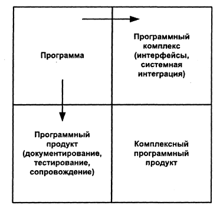

Чтобы понять принципиальные отличия сложного ПО от обычной программы, рассмотрим рис. В.1

В левом верхнем углу рисунка находится программа. Она является завершенным продуктом, пригодным для запуска только своим автором и только в той системе, где она была разработана.
При перемещении вниз через горизонтальную границу программа превращается в программный продукт. Это программа, которую любой человек может использовать и, возможно, при наличии программистской квалификации, сопровождать, т.е. вносить в нее различные изменения. Она может использоваться в различных операционных системах и с различными данными. Такую программу нужно тщательно протестировать, чтобы быть уверенным в ее надежности. Для этого нужно подготовить достаточное количество контрольных примеров для проверки диапазона допустимых значений входных данных, обработать эти при меры и зафиксировать результаты. Наконец, развитие программы в программный продукт требует создания подробной документации, с помощью которой каждый мог бы использовать ее. Опыт говорит, что программный продукт стоит, по крайней мере, втрое дороже, чем просто отлаженная программа с такой же функциональностью.
При пересечении вертикальной границы программа становится компонентом программного комплекса. Он представляет со бой набор взаимодействующих программ, согласованных по функциям и форматам данных, предназначенный для решения крупномасштабных задач. Чтобы стать частью программного комплекса, входные и выходные данные и сообщения программы должны удовлетворять точно определенным интерфейсам. Программа должна быть спроектирована таким образом, чтобы использовать точно определенные ресурсы - объем памяти, внешние устройства, процессорное время. Наконец, программу нужно протестировать вместе с прочими системными компонентами во всех сочетаниях, которые могут встретиться. Это тестирование может оказаться большим по объему, поскольку количество тес тируемых случаев растет экспоненциально. Оно также занимает много времени, так как скрытые ошибки выявляются при неожиданных взаимодействиях отлаживаемых компонентов. Компонент программного комплекса стоит, по крайней мере, втрое до роже, чем автономная программа с теми же функциями. Стоимость может увеличиться, если в системе много компонентов.
В правом нижнем углу находится комплексный программный продукт. От обычной программы он отличается во всех перечисленных выше отношениях и стоит соответственно, как минимум, в девять раз дороже. Именно такой продукт представляет собой сложную систему ПО, которая является целью большинства программных проектов.
В 1975 г Фредерик Брукс, проанализировав свой уникальный по тем временам опыт руководства крупнейшим проектом разработки операционной системы OS/360, определил перечень неотъемлемых свойств ПО: сложность, согласованность, изменяемость и незримость.